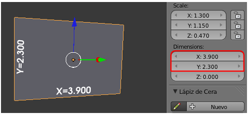
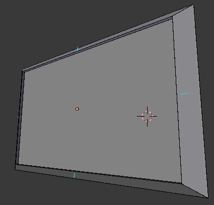
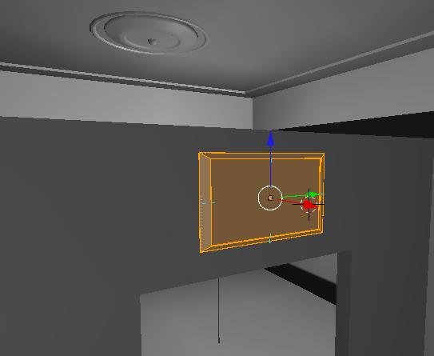
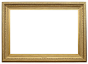
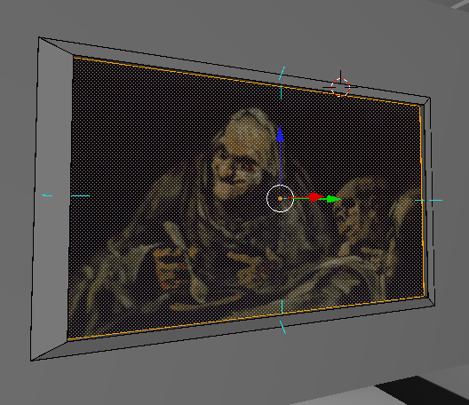
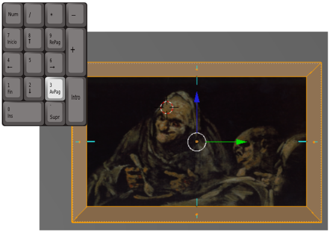
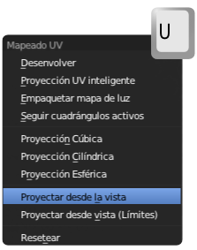
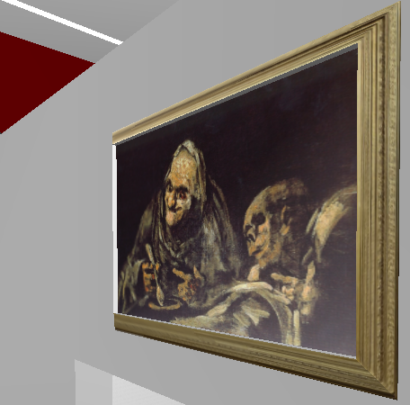
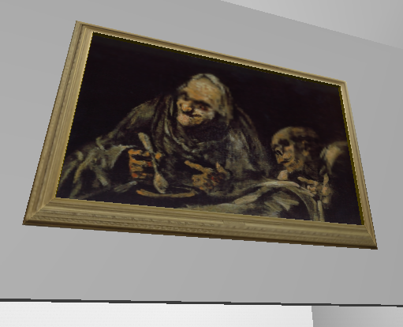

Proyectar desde la vista
Conocemos la opción Desenvolver a la hora de desplegar las caras para un mapeado. Pero esa es sólo una de muchas otras opciones. Una de las más útiles es Proyectar desde vista. Si desplegamos de ese modo mientas nos encontramos en un punto de vista frontal, el recurso es tremendamente útil.
A nuestro hipotético museo le vamos a añadir el primer cuadro.
Su modelado no tiene material y es verdaderamente sencillo:
- Un lienzo (las medidas del plano conviene que sean proporcionales a 49x83 porque son -en centímetros- las de la obra Viejos comiendo sopa de Goya. Nos vale X=3.900, Y=2.300)...

- Partiendo de la selección de la cara del plano el modelado también tiene un marco a base de muy pocos polígonos (lowpoly) con algunas extrusiones ("E") y escalados ("S"). Con desplazamientos adecuados en los vértices esto es lo que tenemos (hemos hecho visibles las Normales, una buena costumbre cuando estamos mapeando).

La imagen anterior nos informa de que la primera extrusión ("E"), la que sale perpendicular del lienzo ha quedado con la Normal invertida. Así que seleccionamos todas las caras ("A") y usamos el menú Malla/Normales/Recalcular hacia afuera. Una vez colocado encima de la puerta de la galería interior, es posible que determinemos escalarlo ("S") de una manera global para conseguir que la puerta parezca más ancha.
El método para el mapeado en la cara donde plasmar la pintura es ya conocido... Estas son las imágenes que vamos a usar.
Viejas comiendo sopas y Marco dorado
|
Viejos comiendo sopa // Autor: Francisco de Goya // Licencia: Dominio público
|

Marco dorado // Licencia: Dominio Público
|
Este es el resultado del mapeado sobre la cara central del cuadro.
Así que vamos a ver el mapeado correspondiente al marco.
De todos los dos bucles de caras correspondientes al marco seleccionamos  ("Alt_Clic derecho") el más frontal dejando fuera de la selección el que sale perpendicular del plano del lienzo.
("Alt_Clic derecho") el más frontal dejando fuera de la selección el que sale perpendicular del plano del lienzo.
Nos vamos al entorno de trabajo UV Editing:
- En el Editor UV
 cargamos la imagen marco.png que hemos descargado a nuestro disco duro.
cargamos la imagen marco.png que hemos descargado a nuestro disco duro.
- En el editor Vista 3D nos colocamos en un punto de vista frontal al cuadro (en nuestro caso "NumPad 3"). No es necesario que sea ortográfico aunque eso puede ayudar a tener una mejor visión de la técnica que estamos usando.

Es el momento de dar la orden Malla/Desplegar UVs/Proyectar desde la vista (o el atajo "U") desde el editor Vista 3D.

Esto obliga a Blender a proyectar sin deformar, y eso se adapta por completo a nuestras necesidades en el Editor UV  . Después sólo nos preocupamos de adaptar los vértices para que el mapeado sea correcto.
. Después sólo nos preocupamos de adaptar los vértices para que el mapeado sea correcto.
En el motor de juegos ("P") presenta una sensación muy volumétrica sin apenas polígonos.
Los materiales
Ahora asignamos Material  al objeto pero para que quede realmente bien atenderemos a estos consejos. La malla tiene tres materiales asignados a sus correspondientes caras:
al objeto pero para que quede realmente bien atenderemos a estos consejos. La malla tiene tres materiales asignados a sus correspondientes caras:
- Lienzo. Tiene que tener la opción Textura en caras activada o no saldrá en la simulación ("P"). El valor de la Intensidad de Especular debe ser muy bajo para que no refleje luz.
- Marco_con_uv. Exactamente igual que la anterior aunque aquí la Intensidad de Especular puede ser algo más alto al tratarse de un material brillante.
- Marco_sin_uv. Es el material asignado al bucle de caras que sale perpendicular al lienzo. Como no tiene mapeado hay que darle un color (AC9E00 puede ser una buena opción).
De esa manera en la simulación presenta este aspecto.
